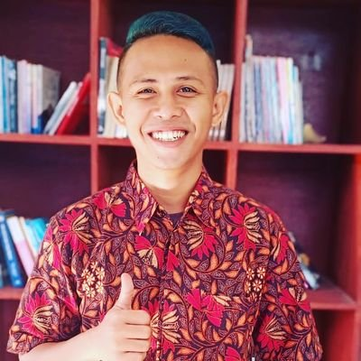

|  |
Djatmiko Suwandi
Results-driven technology specialist with over 5 years of experience and achievement in creating, developing, and administering professional development in pedagogical and andragogical environments. Works closely with classroom teachers, principals and district administrators to achieve best practice technology infusion into teaching and learning with high energy. Proven success with technology initiatives from inception to deployment with local and nation-wide exposure in Higher Ed, K12 and private sector markets. Highly creative, innovative and passionate leader who uses cutting-edge technology to discover creative ways to assist schools and organizations in meeting their learning and productivity goals. Creates an atmosphere conducive to learning. Resourceful multimedia expert with exceptional communication skills; which encourages teamwork, socialization, and high achievement.
|